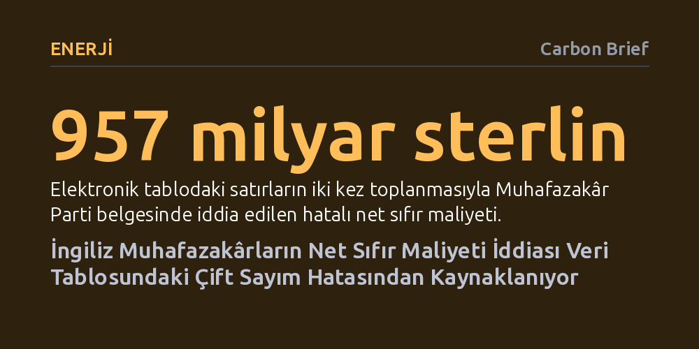

ENERJI · Carbon Brief · 2026-10-10
İngiltere Muhafazakâr Partisinin net sıfır maliyetini 957 milyar sterlin göstermesinin nedeni, resmi tablodaki satırların iki kez toplanmasıyla yapılan bir hesaplama hatası. Komitenin asıl tahmini 478 milyar sterlinken, güncel hesaplar düşen teknoloji maliyetleriyle bu tutarın 108 milyar sterline indiğini gösteriyor.
Siyasi tartışmalarda iklim politikalarını aşırı pahalı göstermek için öne sürülen sarsıcı iddiaların, bazen en temel veri tablosu hatalarına ve çift sayımlara dayanabileceğini somut bir örnekle gösteriyor.

İngiltere'de muhalefette bulunan Muhafazakâr Parti, yayımladığı The Right Way başlıklı politika belgesinde ülkenin net sıfır karbon hedeflerine yönelik sert bir eleştiri yöneltti. Parti metninde, iklim değişikliğiyle mücadele politikalarının Birleşik Krallık ekonomisine 957 milyar sterlin gibi devasa bir maliyet yükleyeceği öne sürülüyor ve bu harcamanın kamuoyu için kabul edilemez olduğu savunuluyordu. Üstelik raporda iklim modellemelerinin siyasi muhakemenin önüne geçmemesi gerektiği vurgulanırken, hükümetin "sorumluluğunu üstlendiği sorunları çözebilecek yeterlilikte olması gerektiği" ifade ediliyordu.
Ancak Carbon Brief tarafından yapılan ayrıntılı inceleme, kamuoyunda yankı uyandıran bu rakamın bilimsel bir modellemeden değil, utanç verici bir elektronik tablo hatasından kaynaklandığını ortaya koydu. Muhafazakârların kaynak gösterdiği resmi rapordaki gerçek maliyet tam olarak bu rakamın yarısıydı; yani 478 milyar sterlindi. Hatta güncel veriler hesaba katıldığında, söz konusu tutarın çok daha gerilediği görülüyordu.
Yanlışlığın kaynağı, Birleşik Krallık İklim Değişikliği Komitesi'nin (CCC) 2020 yılında yayımladığı Altıncı Karbon Bütçesi raporunun veri tablosuna dayanıyor. Komite, 2020 ile 2050 yılları arasında sıfır emisyonlu bir ekonomi kurmak için gereken harcamaları hesaplarken iki ana kalemi karşılaştırmıştı: Temiz elektrik üretimi, ısı pompaları ve elektrikli araçlar gibi alanlara yapılacak ilave sermaye yatırımları (CAPEX) ile fosil yakıt tüketiminin azalması sayesinde elde edilecek operasyonel tasarruflar (OPEX).
Komitenin hesaplamalarına göre 30 yıllık dönemde 1,38 trilyon sterlinlik sermaye yatırımı yapılması, buna karşılık 0,90 trilyon sterlinlik işletme tasarrufu sağlanması öngörülüyordu. Bu iki kalem birbirine oranlandığında ortaya çıkan net maliyet tam olarak 478 milyar sterlindi. Ne var ki CCC'nin kamuya açık tablosunda hem yıllık sektörel kırılımlar hem de her yılın genel toplamını veren ayrı bir satır yer alıyordu. Tabloyu kullanan analist, ara kalemlerle yıllık toplamları ayırt etmeksizin tüm satırları alt alta toplayınca, maliyetleri de tasarrufları da mükerrer şekilde ikişer kez hesaba katmış oldu. Böylece 478 milyar sterlinlik net rakam basit bir işlem hatasıyla 957 milyar sterline fırladı.
Bu fahiş hata doğrudan Muhafazakâr Parti genel merkezinde üretilmedi; aşama aşama yayılan bir dezenformasyon zincirinin son halkasıydı. 957 milyar sterlinlik sayının internetteki ilk izi, Ocak 2026'da Spectator dergisinde emekli bir mühendis ve kendini enerji analisti olarak tanıtan David Turver imzasıyla yayımlanan bir makalede görüldü. Turver, bir gün sonra serbest piyasa yanlısı düşünce kuruluşu Institute of Economic Affairs (IEA) için kaleme aldığı raporda da aynı hatalı hesaplamayı tekrarladı.
Turver'ın raporunda resmi komite verilerine atıf yapılmasına rağmen, tablodaki mükerrer toplama dikkat edilmemişti. Dahası, fosil yakıtların ve mevcut fosil yakıtlı araçların gelecekte sanki hiçbir maliyeti olmayacağı gibi gerçek dışı varsayımlarla net sıfırın 7,6 trilyon hatta 9 trilyon sterline mal olacağını iddia eden abartılı manşetler türedi. Çift sayım hatasıyla üretilen 957 milyar sterlinlik veri, aylar sonra Ekim 2026'da Muhafazakâr Parti'nin resmi politika kitapçığına taşınarak siyasi bir argümana dönüştü.
Gerçek verilere bakıldığında, CCC'nin 2020'de hesapladığı 478 milyar sterlinlik orijinal net maliyet bile 30 yıllık dönem boyunca Birleşik Krallık gayrisafi yurtiçi hasılasının (GSYH) yüzde 1'inden daha azına karşılık geliyordu. Dahası komite, fosil yakıt ithalatının azalması ve yerli temiz teknoloji yatırımlarının tetikleyeceği ekonomik canlanma sayesinde bu dönüşümün ülke milli gelirini yaklaşık yüzde 2 oranında büyüteceğini hesaplamıştı.
Zaman içinde teknoloji maliyetlerinin hızla gerilemesi, bu faturayı daha da aşağı çekti. 2025 yılında projeksiyonlarını güncelleyen komite, özellikle elektrikli araçların beklenenden çok daha hızlı ucuzlaması sayesinde 2025-2050 dönemi için net yatırım maliyetini 108 milyar sterline revize etti. Bu rakam Birleşik Krallık GSYH'sinin yüzde 0,2'sinden daha azına denk geliyor. Komitenin son değerlendirmelerine göre, net sıfır emisyona geçişin toplam maliyeti tek bir küresel fosil yakıt fiyat şokunun ekonomiye vereceği zarardan daha azken, dönüşümün her yıl ülkeye 110 milyar sterlinlik net ekonomik fayda sağlaması bekleniyor.